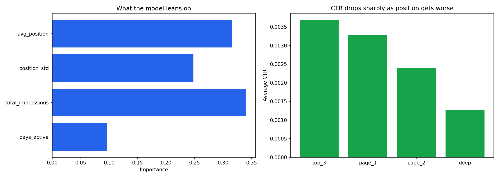

Some pages are ranking very high on Google search but receive virtually no clicks, thus wasting their search visibility. I explored one month of the FlyRank's actual search data (116,114 pages) in order to discover whether I can somehow detect such pages. At first, I have attempted to create a predictive model that failed to beat random guess baseline. However, then I switched to a different method: instead of observing days independently, I observed each page for an entire month, adding stability of the page ranking feature. This helped to create an actual Random Forest to beat the baseline (from 70.0% to 70.8%). Final result: 9,888 pages of high rank and traffic for a content team's attention.
Which high ranking pages are secretly squandering their search engine visibility because they get far fewer clicks than their ranking would warrant, and could such an easy model accurately identify them?
This is important because the content team cannot possibly do a manual review of all pages every month. A page that ranks well, but not clicking through to get conversions is an untapped resource which more often than not is simply a matter of metadata and can be fixed at a low cost.
What it would help make the decision on: Prioritizing limited review hours of the content team to pages which fixing click through would likely yield the most gain.
For the training set, I used FlyRank's real search warehouse data (version v20260703), the fact_content_daily_performance table, filtering on March 2026, a regular mid-panel month, instead of the last month from the dataset (set aside as a test set according to the dataset's instructions).
Instead of using daily rows, I rolled all the information up to one row per page, but for an entire month. A daily CTR is more fluctuating than a month-long one which is more stable for measuring.
After rolling up and selecting pages that have 50 or more total monthly impressions (no need to consider a CTR based on almost no visits), I got 116,114 pages.
Used variables: avg_position, total_impressions, total_clicks (rolled up), days_active (the number of days when the page was in search that month) and position_stability (daily position variation).
Not used variables: all GA4 fields (engaged sessions, sessions, scroll events). There were only 4% of the rows containing this kind of information, so adding them would lead to discarding 96% of the dataset for a few extra features, which is too much cost. Also, client identifiers were not used in the model as input, only as a grouping feature.
Label: a page is defined to be underperforming when its monthly CTR falls under the average CTR of pages occupying the same position bucket (top 3, page 1, page 2, deep). Similar reasoning to my previous baseline, just calculated on monthly numbers instead of daily.
Features: average position, position stability, total impressions, days active. The latter two are new: position stability reveals whether a page is stable in rank or not, and days active is used to assess consistency in appearance in search results. They are all calculated for the same month, no future data used here.
Baseline: guessing the majority class. As about half of pages in any position bucket will be below the average bucket's CTR, the baseline is already around 70% accuracy rate.
Splitting: random 80/20, stratified by label. A split based on the client group was considered, but as each entry is an entire month's record for a particular page, a standard random split would suffice here. No future data involved in the process whatsoever.
Leakage check: there is nothing in my feature set that uses clicks or CTR, which is the basis for the label. I did this on purpose because this was precisely the error I had intentionally committed before in the internship.
I compared the performance of a Random Forest against the same honest majority-class baseline, on the exact train/test split.
| Method | Accuracy | Precision | Recall |
|---|---|---|---|
| Baseline (majority class) | 0.700 | 0.700 | 1.000 |
| Random Forest | 0.708 | 0.707 | 0.995 |
The Random Forest outperformed the baseline, but marginally: 70.0% vs. 70.8% accuracy. Recall also declined slightly (0.995 vs. 1.000). So it's still catching virtually all problematic pages. This is a very small improvement. And I am not going to make you think it's a great one. But this time it's real and this is more than I could manage earlier when even a decision tree based solely on daily position and impressions failed to beat the baseline no matter what.
What was different is that the reduction of granularity from daily observations to monthly sums removed a lot of noise and addition of position stability provided the algorithm with additional feature to learn from. In the end, it became the second most important after total impressions and average position.

A few reasonable limitations on what I'm actually allowed to say:
I took my recommendation to a new level by ranking pages depending on how confident the model is that a given page underperforms. This way, the content team can start from the top of the list and proceed further depending on the time available.
To be honest, the 15 most "confident" flags were all deep pages (positions in the range 75-88, or page 7-9 on Google). That's normal: if a deep page is underperforming, there's nothing strange about that, so the model will be very confident about it. The harder case, a well-performing page (top 10) that's still underperforming, is rare, and the model has lower confidence there, because of the higher variation in CTR for good positions.
So rather than basing it solely on confidence, I filtered for pages that actually mattered: top 10 position, with real traffic (more than 200 monthly impressions). The result was 9,888 pages, a lot more useful than a list based on confidence alone, because fixing a metadata problem for a page that ranks well and has visitors will bring far more benefit than fixing a page that gets no visitors at all.
All notebooks (weekly assignments and this capstone) are contained within the project repository:
github.com/Lujain-Mahesar/flyrank-ml-internship
Capstone notebook: work/notebooks/capstone.ipynb